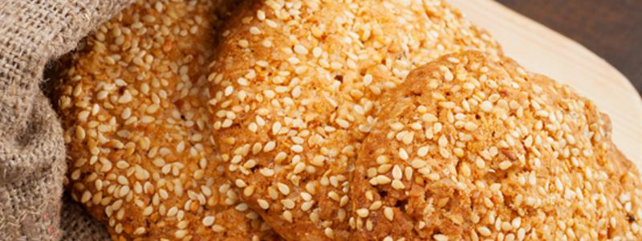

Coco Biscuits

8 30 min 10 min
Ingredients
Overall
| Quantity | Name |
|---|---|
| 200 g | Grated coconut |
| 185 g | Flour |
| 150 g | Brown sugar |
| 10 g | Vanilla sugar |
| 2 | Egg |
| Sesame seed |
8 30 min 10 min
| Quantity | Name |
|---|---|
| 200 g | Grated coconut |
| 185 g | Flour |
| 150 g | Brown sugar |
| 10 g | Vanilla sugar |
| 2 | Egg |
| Sesame seed |